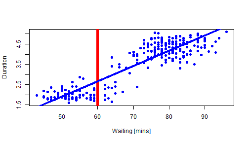

This project is a part of Coursera's course 'Developing Data Products'.
The purpose of this project is to write a shiny application that would carry out a simple prediction algorithm, and support it with the Slidify or Rstudio Presenter presentation (obviously Slidify was chosen here to pitch the application) - not to pitch it technically but to promote the tool, say how cool it is and why you should be using it.
Shiny application enables user to embed R code into HTML5 (web) and it's unbelievably easily achievable!!! It allows other users to access web in the form of friendly interface.
The URL to access to my Shiny application is here: https://dzagangel.shinyapps.io/ShinyApp
The really cool thing is that you can make your application as interactive as you want! You set dynamic variables that user is able to input/change and as a result calculations and output change accordingly.
You don't even need to know html5, css or js to create a user friendly application! You create two R scripts, save them as ui.R and server.R in one folder, input command runApp() and it's done!
The simplicity is the key here!
Shiny application calculates simple prediciton for duration of eruption based on waiting time since last eruption.
Sample data is based on 'faithful' libarary in the 'caret' package.
To simplify, linear prediction model is based on whole data set.
The plot will show you the relation between waiting and duration, in addition the black line will show you the prediction, and as you change the time on the slider and click Submit button, the vertical line will move accordingly so you can easily assess the prediction from the chart.
lm1 <- lm(eruptions ~ waiting, faithful);
plot(faithful$waiting, faithful$eruptions, pch=19, col="blue",xlab="Waiting [mins]",
ylab= "Duration"); lines(c(60,60),c(0,200),col = "red",lwd = 5);
lines(faithful$waiting, predict(lm1), col = "blue",lwd=3)
 Thank you for your attention and I hope you enjoyed the eruption of hot information!! :)
publish(user = "dzagangel", repo = "Developing-Dta-products")